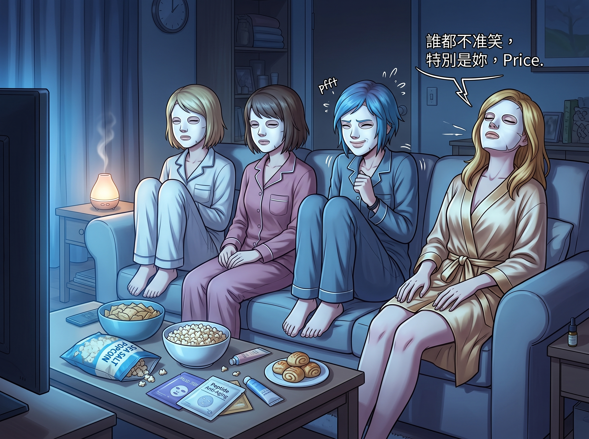

面膜與銀翼殺手之夜


302 寢室的燈光被調暗，只剩下電視螢幕投射出的幽藍與銀白光暈，客廳裡瀰漫著海鹽爆米花、微波爐芝士卷與洋甘菊精油混合的奇妙香氣。
沙發上整齊排列著四張被白色蠶絲面膜覆蓋的面孔。
「誰都不准笑，特別是妳，Price。」Victoria 仰著頭靠在沙發最右側，雙手規規矩矩地搭在膝蓋上，為了防止昂貴的胜肽抗老面膜產生表情紋，她連說話時嘴唇都幾乎不怎麼動，聲音聽起來像一台腹語人偶，「還有，這部一九八二年的《銀翼殺手》是賽博朋克美學的巔峰，請妳帶著敬畏之心觀看，而不是一直盯著仿生人能不能當發動機修理工。」
「但我真的覺得那個叫戴克的傢伙如果開我的 77 年款皮卡，在第一幕就已經把整條街撞爛了。」Chloe 盤腿坐在沙發正中間，身上的長絨睡袍鬆垮地敞著。她臉上的面膜被扯出幾個透氣孔，以便她毫無障礙地把手伸進中間那個超大號塑料盆裡，抓起一把金黃油亮的爆米花塞進嘴裡。
「唔……咀嚼的時候面膜邊緣會翹起來。」Kate 坐在 Chloe 左側，手裡捧著一杯熱牛奶，正小心翼翼地用指腹撫平鼻翼兩側的面膜褶皺。螢幕上的酸雨與霓虹燈光映在她的眼睛裡，帶著幾分新奇與專注，「不過，這個世界看起來雖然潮濕冰冷，但那首片尾曲真的很美。」
「那叫範吉利斯的電子合成器先驅之作，Marsh。」Victoria 微微動了動下巴，語氣裡帶著名媛特有的考究，但隨即又被一陣悉悉索索的聲音打斷。
坐在地毯靠著沙發邊緣的 Max 正把相機鏡頭對準沙發上的三人。黑框眼鏡架在面膜外面，看起來像某種造型前衛的外星生物。
「Maxine Caulfield，」Victoria 閉著眼睛冷冷開口，「如果妳敢按快門把我們四個敷著白色布條的照片存檔，我就立刻給西雅圖的每一家獨立畫廊發郵件，說妳的成名作全是用微波爐反光拍出來的。」
「咔嚓。」
清脆的快門聲在雨聲特效中響起，伴隨著相紙緩緩吐出的微弱機械震動。
「太晚了，這張叫《302 寢室的四個仿生人會夢見電子羊嗎》。」Max 撕下相紙，笑著把它倒扣在茶几上，隨後反手從茶几上端過那一盤剛出爐、還在滋滋冒油的微波爐芝士卷，「來吧，剛烤好的，再不吃芝士就要凝固了。」
「給我留兩個！」Chloe 甚至顧不上臉上的面膜，身子往前一撲，長臂直接越過 Max 的肩膀，精準捏起一個金黃酥脆的芝士卷塞進嘴裡，被燙得連連哈氣，卻滿足地瞇起了眼睛，「燙燙燙……但這絕對比 Blackwell 食堂的任何東西都要高級一千倍。」
Kate 輕輕笑出聲，伸手幫 Chloe 扶正差點滑落的面膜，又拿了一張乾淨的餐巾紙遞給 Max。
螢幕上的老舊飛艇緩緩掠過煙雨朦朧的摩天大廈，洛杉磯的虛構未來在電視機裡無聲燃燒。沙發上的四個人擠在厚實的毛毯下，肩頭挨著肩頭，分享著熱騰騰的油炸碳水與微燙的熱茶。
窗外太平洋的夜潮聲依稀可聞，但房間裡只有電影的低沉配樂與偶爾響起的咀嚼聲。在這個洗盡泥沙、沒有危機與倒計時的深夜，時間彷彿終於被允許慢了下來，平靜地流淌在每一寸柔軟的微光裡。